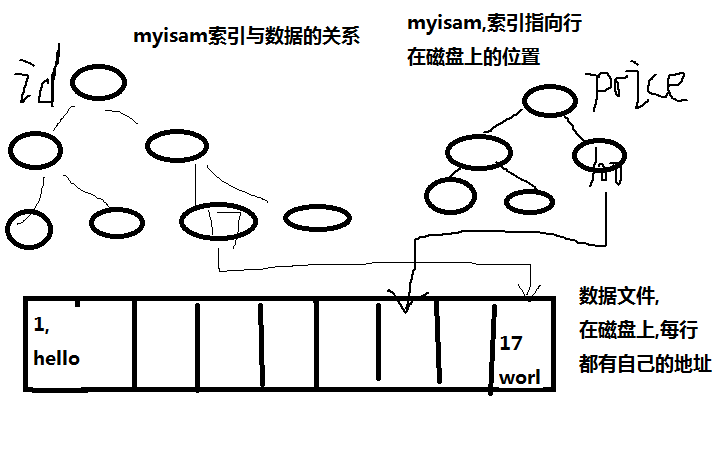
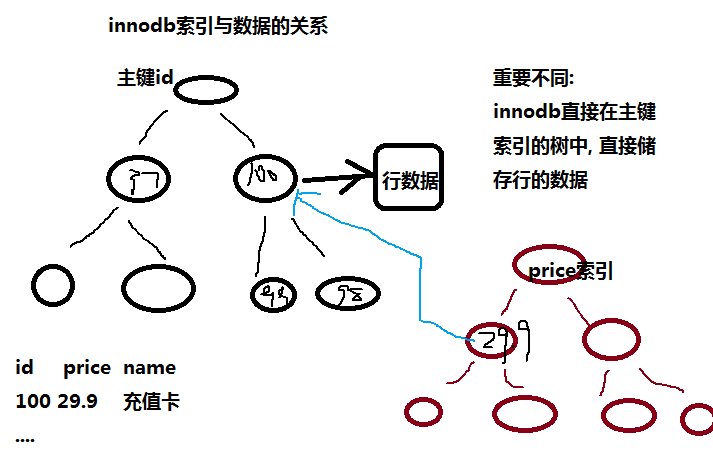
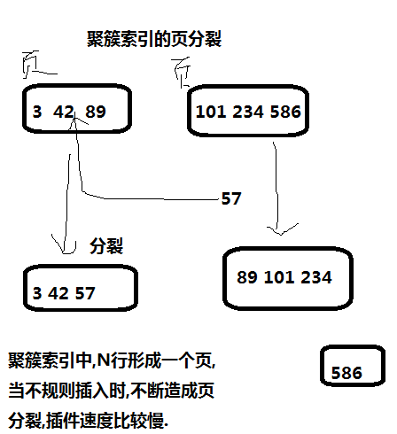

mysql优化之聚簇索引
0 条评论聚簇索引(主要关注InnoDB)不是一种单独的索引类型，而是一种数据存储的方式。具体的细节依赖于其实现方式，但InnoDB的聚簇索引实际上在同一个结构中保存了B-Tree索引和数据行。
索引的全部知识可参考我的高性能mysql学习笔记-创建高性能的索引
聚簇索引与非聚簇索引
都属于B-Tree索引类型，只不过数据存储的方式不同，Myisam与innodb引擎,索引文件的异同，如下两图所示：


由上图可知：
innodb的主索引文件上 直接存放该行数据,称为聚簇索引,次索引指向对主键的引用
myisam中, 主索引和次索引,都指向物理行(磁盘位置).
注意: innodb来说：
- 1: 主键索引 既存储索引值,又在叶子中存储行的数据
- 2: 如果没有主键, 则会Unique key做主键
- 3: 如果没有unique,则系统生成一个内部的rowid做主键.
- 4: 像innodb中,主键的索引结构中,既存储了主键值,又存储了行数据,这种结构称为”聚簇索引”
聚簇索引的优缺点
优势: 根据主键查询条目比较少时,不用回行(数据就在主键节点下)
劣势: 如果碰到不规则数据插入时,造成频繁的页分裂.
页分裂过程如下所示：

聚簇索引高性能索引策略
聚簇索引的主键值,应尽量是连续增长的值,而不是要是随机值, (不要用随机字符串或UUID)否则会造成大量的页分裂与页移动
对于innodb而言,因为节点下有数据文件,因此节点的分裂将会比较慢.对于innodb的主键,尽量用整型,而且是递增的整型.如果是无规律的数据,将会产生的页的分裂,影响速度.采用索引覆盖:索引覆盖是指 如果查询的列恰好是索引的一部分,那么查询只需要在索引文件上进行,不需要回行到磁盘再找数据.
例如：
index(id,name) select name from test_shop_user where id='101' and name='seven'